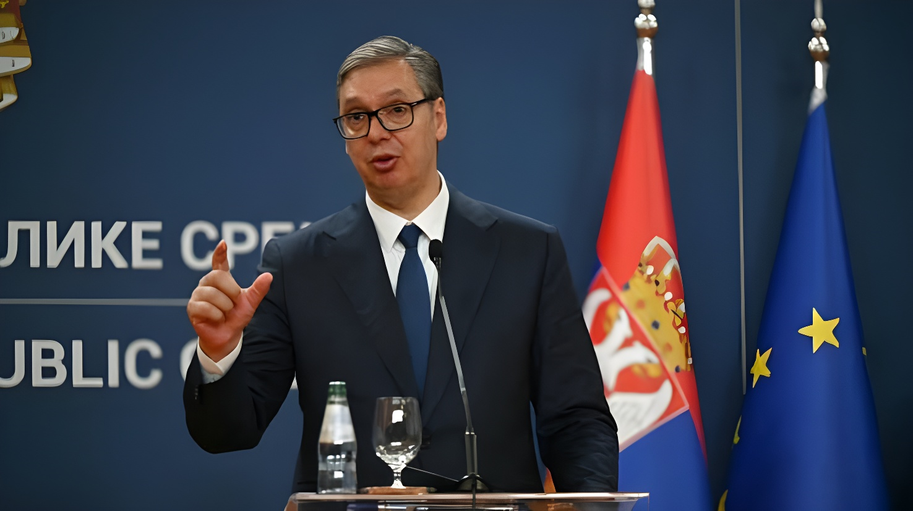

Le 9 septembre 2026, le président serbe Aleksandar Vučić a signé les décrets dissolvant la 14ᵉ Assemblée nationale et convoquant des élections législatives anticipées pour le 25 octobre 2026, plus d'un an avant l'échéance normale. Cette décision intervient après près de deux ans de manifestations étudiantes contre la corruption, déclenchées par l'effondrement meurtrier de l'auvent de la gare de Novi Sad, qui avait fait seize morts le 1er novembre 2024.
Après avoir longtemps temporisé, le président serbe a fini par céder à une revendication portée depuis mai 2025 par le mouvement de contestation étudiant : la tenue d'élections législatives anticipées. Le 5 septembre 2026, le comité central du Parti progressiste serbe (SNS, au pouvoir depuis 2012) a désigné à l'unanimité Aleksandar Vučić comme tête de liste et candidat au poste de Premier ministre pour le scrutin à venir. Deux jours plus tard, le 7 septembre, le gouvernement dirigé par Đuro Macut a formellement proposé au chef de l'État de dissoudre l'Assemblée nationale et de convoquer de nouvelles élections. Le 9 septembre à midi, lors d'une allocution télévisée, Aleksandar Vučić a signé les deux décrets : celui dissolvant le Parlement et celui fixant le scrutin au 25 octobre 2026.
Le mouvement de contestation trouve son origine dans une tragédie : le 1er novembre 2024, l'auvent en béton de la gare de Novi Sad, récemment rénovée dans le cadre d'un projet d'infrastructure ferroviaire lié à la Nouvelle route de la soie chinoise, s'est effondré, tuant seize personnes. L'accident a mis en lumière des soupçons de corruption et de négligence dans l'attribution des marchés publics, provoquant des blocages d'universités dès le 22 novembre 2024, puis des manifestations qui ont gagné plusieurs centaines de villes et bourgs du pays au fil des mois suivants.
« Nous avons besoin de résultats électoraux qui déterminent et démontrent clairement la volonté des citoyens quant à la direction et la voie que doit emprunter la Serbie. »
— Aleksandar Vučić, président de la Serbie, 9 septembre 2026Face au SNS, qui se présente sous la bannière « Aleksandar Vučić — Serbie unie », les meneurs du mouvement de contestation préparent une « liste étudiante » dont les candidats, tenus secrets pour éviter les pressions, doivent être dévoilés dans les prochains jours. Un sondage réalisé en juin 2026 créditait cette liste potentielle de 45 % des intentions de vote chez les électeurs décidés, contre 36 % pour le SNS. Trois partis d'opposition pro-européens ont d'ores et déjà annoncé qu'ils la soutiendraient sans condition.
Premier ministre de 2014 à 2017 puis président de la République depuis 2017, réélu en 2022 avec plus de 58 % des voix dès le premier tour, Aleksandar Vučić domine la vie politique serbe depuis plus de dix ans à la tête du Parti progressiste serbe. La Constitution lui interdit de briguer un troisième mandat présidentiel consécutif à l'échéance de son mandat actuel, en avril 2027. Il a fait savoir qu'il envisageait de quitter la présidence pour redevenir Premier ministre si son camp l'emportait aux législatives du 25 octobre.
Ce climat de tension intervient alors que la candidature serbe à l'Union européenne stagne. En mai 2025, le Parlement européen a adopté une résolution pointant des progrès jugés limités, voire inexistants, sur l'État de droit, la liberté des médias et l'alignement sur la politique étrangère de l'UE, notamment vis-à-vis de la Russie. La controverse suscitée début septembre 2026 par les honneurs rendus par des responsables serbes à Ratko Mladić, l'ancien chef militaire serbo-bosniaque condamné pour le génocide de Srebrenica et mort en détention à La Haye, a encore accentué les critiques européennes à l'égard de Belgrade.
L'auvent de la gare de Novi Sad s'effondre, faisant seize morts et déclenchant un vaste mouvement de contestation étudiant.
Le Premier ministre Miloš Vučević annonce sa démission, effective le 19 mars 2025.
L'endocrinologue indépendant Đuro Macut est investi Premier ministre par l'Assemblée nationale.
Le mouvement étudiant formalise sa revendication d'élections législatives anticipées.
Le SNS désigne à l'unanimité Aleksandar Vučić tête de liste et candidat au poste de Premier ministre.
Le gouvernement propose la dissolution ; le président signe les décrets et fixe le scrutin au 25 octobre 2026.
Pour la première fois depuis son arrivée au pouvoir, le Parti progressiste serbe affronte une opposition en mesure de se présenter unie et créditée, selon les enquêtes d'opinion disponibles, d'un rapport de force favorable. Le scrutin du 25 octobre dira si la mobilisation de rue, portée pendant près de deux ans par la jeunesse serbe, parvient à se traduire en poids parlementaire, ou si le parti au pouvoir depuis quatorze ans conserve le contrôle de l'Assemblée malgré les controverses qui l'entourent.
Au-delà de la seule photographie électorale, l'issue du vote pèsera aussi sur la trajectoire européenne de la Serbie, déjà compliquée par les critiques de Bruxelles sur l'État de droit, et sur la capacité du pays à aborder sereinement l'organisation de l'Exposition universelle de Belgrade, prévue en mai 2027.